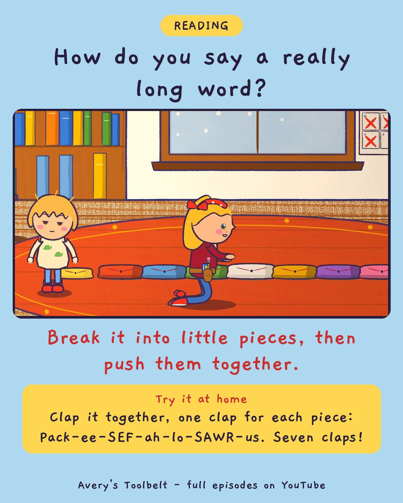

The Long WordClapping Out a Dinosaur Name
那個很長的字

How do you say a really long word?
Break it into little pieces, then push them together.
Try it at home
Clap it together, one clap for each piece: Pack-ee-SEF-ah-lo-SAWR-us. Seven claps!
Free printable coloring page (PDF) Watch the full episode on YouTubeAbout this episode, for grown-ups
The dinosaur book has a page near the back where the names get out of hand, and one of them is so long that even Mom can't say it. That changes everything. Now it isn't just a hard word in a book - it's a thing a grown-up can't do, and Avery wants it.
Day one is terrible. Day two is worse. Then Avery shuts the book and says, quietly, that she's just bad at words - and means it. Gus, meanwhile, has his own version - "Packy-sausage" - and defends it all week against everybody, including the book. Then Mom gets a piece of paper and asks Avery to clap every time her mouth opens.
What children find out: a long word is made of shorter sounds you already know. Clap it into pieces, say each piece, and then put them back together. Pack. Ee. Sef. Ah. Lo. Sawr. Us. Seven claps - and it means thick-headed lizard.
For grown-ups: an episode about discouragement, and a mom who answers "I'm just bad at words" not with a compliment but with a pencil - and shows Avery she can already say every single piece.